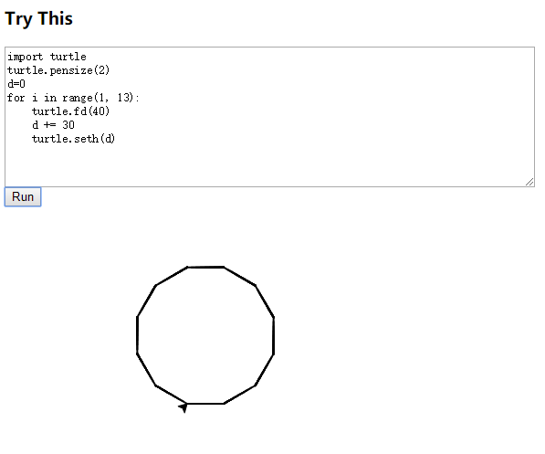
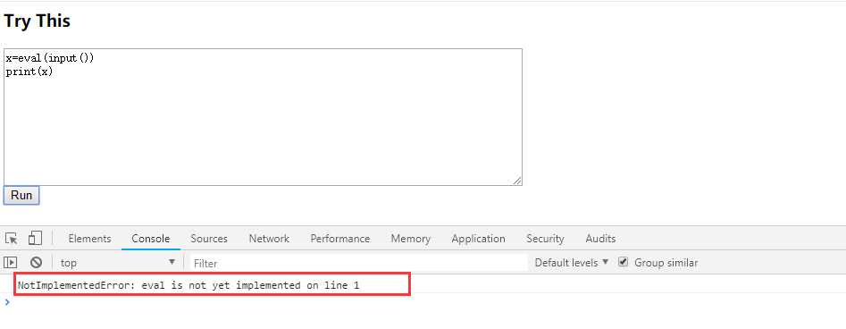

1. Skulpt是一个完全依靠浏览器端模拟实现Python运行的工具
2. 不需要预处理、插件或服务器端支持，只需编写python并重新载入即可。
3. 由于代码完全是在浏览器中运行的，所以不必担心“服务器崩溃”问题。
github:https://github.com/skulpt/skulpt
demo:
<html>
<head>
<script src="dist/skulpt.min.js" type="text/javascript"></script>
<script src="dist/skulpt-stdlib.js" type="text/javascript"></script>
</head>
<body>
<script type="text/javascript">
function outf(text) {
var mypre = document.getElementById("output");
mypre.innerHTML = mypre.innerHTML + text;
}
function builtinRead(x) {
if (Sk.builtinFiles === undefined || Sk.builtinFiles["files"][x] === undefined)
throw "File not found: '" + x + "'";
return Sk.builtinFiles["files"][x];
}
function runit() {
var prog = document.getElementById("yourcode").value;
var mypre = document.getElementById("output");
mypre.innerHTML = '';
Sk.pre = "output";
Sk.configure({ output: outf, read: builtinRead, __future__: Sk.python3});
(Sk.TurtleGraphics || (Sk.TurtleGraphics = {})).target = 'mycanvas';
var myPromise = Sk.misceval.asyncToPromise(function() {
return Sk.importMainWithBody("<stdin>", false, prog, true);
});
myPromise.then(function(mod) {
console.log('success');
},
function(err) {
console.log(err.toString());
});
}
</script>
<h3>Try This</h3>
<form>
<textarea id="yourcode" cols="80" rows="10">
import turtle
print('hello')
t = turtle.Turtle()
t.color('red')
t.forward(75)
</textarea><br />
<button type="button" onclick="runit()">Run</button>
</form>
<pre id="output" ></pre>
<div id="mycanvas"></div>
</body>
</html>

但是，有的问题，不能识别eval函数，不知道为什么？
